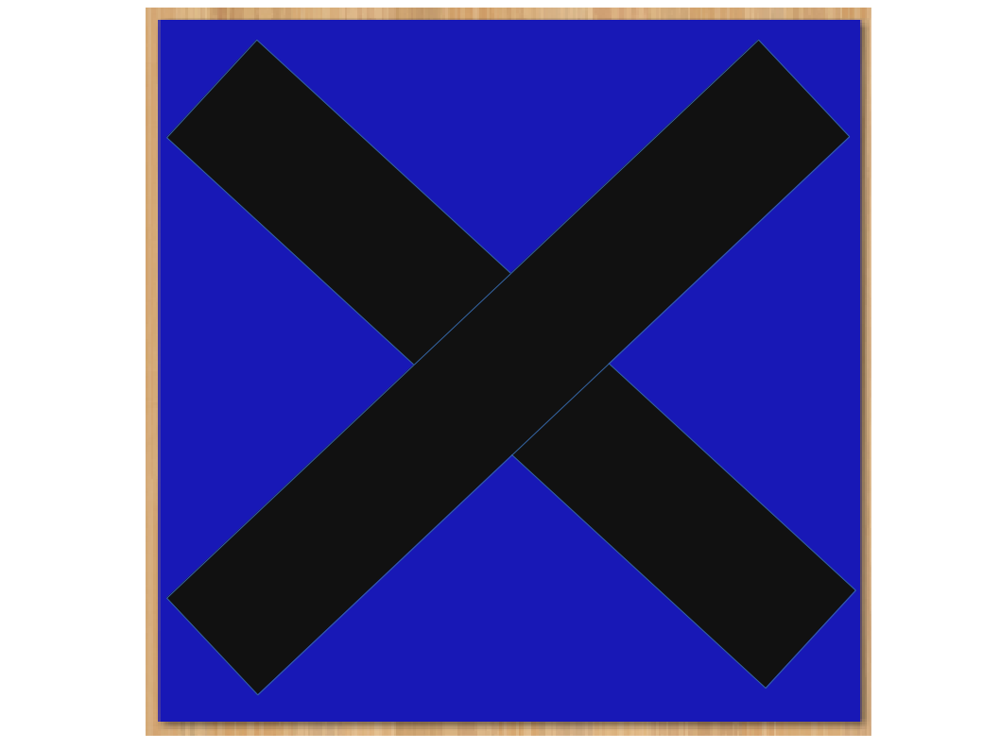
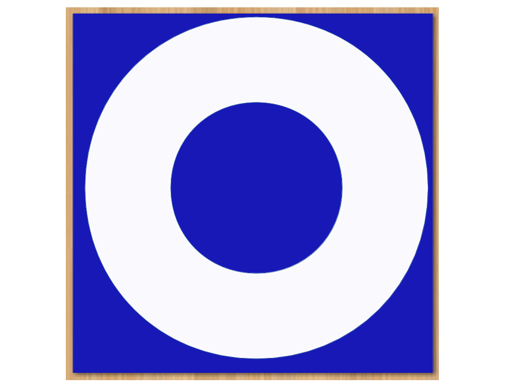

O Gomoku, também conhecido como Gobang, é um jogo de tabuleiro estratégico tradicionalmente jogado com peças de Go (peças negras e brancas) em um tabuleiro de Go ligeiramente modificado (15x15 interseções). No entanto, ao contrario deste, uma vez que as peças são colocadas não podem ser movidas ou retiradas do tabuleiro. No inicio do jogo, as negras começam, e os jogadores alternam na colocação de uma pedra da sua cor em uma interseção vazia. O vencedor é o primeiro jogador a obter uma linha ininterrupta de cinco pedras na horizontal, vertical ou diagonal.
| Jogador da vez |
|


|